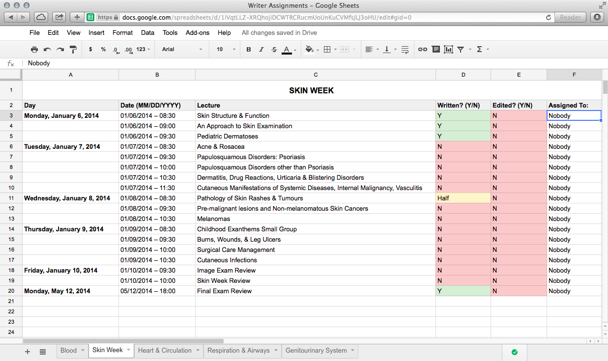
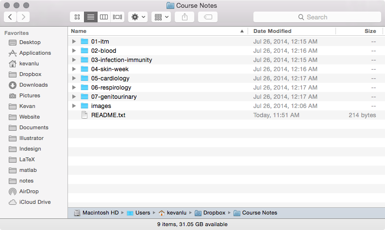

Once you've signed-up to contribute to the project, you will be added to a shared Dropbox folder. If you've waited more than a day and you still haven't been added, email
A spreadsheet showing showing the lectures that have yet to be written or assigned is available here. It’s also available from the link on the top of this site.

Once you’re added to the Dropbox folder, you should see something like this:

The lecture notes are written as .md (Markdown) files. To edit them, we’ll be using StackEdit.
To set up StackEdit, follow these instructions:
userCustom.onReady = function() {
$('head').append('<link href="https://dl.dropboxusercontent.com/u/157117/notes/resources/stylesheets/stackedit.css" rel="stylesheet" />');
};Now anything you type will show up following the same format it’ll appear in on the website.

To work on lecture notes from the Dropbox folder, follow these steps:
Now you should have a blank lecture note corresponding to your own lecture. To format your notes, check out this Layout Reference Guide.
It may also be easier to look at the format of another note that I’ve already written. To do this, follow the same steps as above, but pick another lecture. I would suggest this file:
To add images to the note file, you need to have a link to it. If you have a Mac, you can use GrabBox (grabbox.devsoft.no) to automatically upload your screenshots, and generate a link for you to share.
What it does is that it automatically uploads any screenshot you take onto your Dropbox folder, and then copies a link to the image onto your clipboard. Then, when you want to insert the picture, you can just paste in the link.
One problem with this is that your screenshots will all be placed in ~/Dropbox/Apps/GrabBox, instead of your Desktop. If you want to stop this from happening, just quit GrabBox from its menubar icon.
When you're ready to submit your lecture note, export it and email it to me at
To export the file, follow the following steps:

When I’ve received the file, I’ll copy it onto the website, and correct any formatting errors. I’ll email you when it’s online.
To write compatible course notes, you need to be familiar with Markdown. Markdown is a tool that lets you automatically convert a plain-text document into an HTML file. All you need to do is follow a few specific formatting rules.
If anything is left unclear after this guide, you can start by looking at the raw source files for existing lecture notes. They’re all accessible from the Shared Dropbox folder.
=. These are followed by a horizontal rule, entered with <hr>.
This is a Main Header
=====================
<hr>-. These are usually emphasized by surrounding the text with **.
**This is a Second Level Header**
---------------------------------# signs. ### will make a 3rd-level header, #### will make a 4th level header, etc.
###**This is a 3rd Level Header**
####**This is a 4th Level Header**
#####**This is a 5th Level Header**
######**This is a 6th Level Header***this***this**<sup>this</sup>.<sub>this</sub>.→←> and < respectively.°**Bulleted Lists**
- This is a bulleted list.
- This is the second bullet.
- This is the third bullet.
**Numbered Lists**
1. This is a numbered list.
2. This is the second number.
3. This is the third number.
**Nested Lists**
- This is a top-level bullet.
- This is a second-level bullet.
- This is another second level bullet.
Below is an example of everything that has been described above:
Anatomy of the Larynx
=====================
<hr>
###**Intrinsic vs Extrinsic Muscles**
- **Extrinsic muscles** → on the **outside** of the larynx.
- These are all innervated by *vagus* (cranial nerve X).
- These are also known as the **strap muscles**.
- **Intrinsic muscles** → on the **inside** of the larynx.
- Innervation of the intrinsic muscles is more complicated.
- They're also innervated by branches of *vagus*, namely:
1. *Superior Laryngeal Nerve* (SLN).
2. *Recurrent Laryngeal Nerve* (RLN).
When converted into HTML, this is what you will see on the website:
Images can either be displayed beneath the text, or beside the text. An example of an image placed beside the text is shown to the right.
<img src="IMAGE_URL.jpg"><img class="right" src="IMAGE_URL.jpg">Below is an example of an image placed beneath the text. For full-width images, you can also add a figure caption. To do this, write your caption after the image, and surround the caption with backticks → `.
An example of this is:
<img src="IMAGE_URL.jpg">
`My caption is here.`When linking to images, make sure you save a copy on the shared Dropbox folder, so that there’s a central location where all the image references are located.
If you want to reinforce a particular point or concept, you can put it in an emphasis box. To put something in an emphasis box, just add a > to the beginning of each line you want to include. For instance, the following Markdown:
> ###**ASD Acronym for Aortic Stenosis**
> - **Angina** → 50% of patients die within *5 years of onset*
> - **Syncope** → 50% of patients die within *3 years of onset*
> - **Dyspnea** → 50% of patients die within *2 years of onset*
Will result in the following emphasis box:
You can input code into your notes if you need to write equations. LaTeX is a typesetting system that is popular for technical and scientific writing. It’s fairly complex, so only some examples will be shown here:
$$P_AO_2 = P_IO_2 - \frac{P_ACO_2}{0.8}$$$$PVR = \frac{\overline{P_{pa}} - \overline{P_{pv}}}{CO}$$$$H_2O + CO_2 \rightarrow H_2CO_3 \rightarrow HCO_3^- + H^+$$$$
\begin{align}
FE_{Na} &= \frac{[Na]_u/[Na]_p}{[\text{Creat}]_u/[\text{Creat}]_p} \times 100\%\\
FE_{Na} &= \frac{15/160}{6000/90} \times 100\%\\
FE_{Na} &= \frac{15/160}{6000/90} \times 100\%\\
FE_{Na} &= \frac{15/160}{6000/90} \times 100\%\\
FE_{Na} &= 0.14\%
\end{align}
$$- The $$\dot{V}_{CO_2}$$ is the rate of carbon dioxide loss from the body.
- The $$\dot{V}_{O_2}$$ is the rate of oxygen intake from the air.
- **Hyperventilation:** → $$P_ACO_2$$ ↓
- **Hypoventilation:** → $$P_ACO_2$$ ↑
Tables can be entered by following the formatting shown below:
| Lab Test | Value | Normal Values |
|---------------------|--------------|-----------------|
| *pH* | 7.35 | 7.4 |
| *PCO<sub>2</sub>* | 60 mmHg | 40 mmHg |
| *HCO<sub>3</sub>* | 32 mmol/L | 24-26 mmHg |
Which will result in:
| Lab Test | Value | Normal Values |
|---|---|---|
| pH | 7.35 | 7.4 |
| PCO2 | 60 mmHg | 40 mmHg |
| HCO3 | 32 mmol/L | 24-26 mmHg |
Side-notes can be used if you want to add some clarification, or an aside, to a point. A side-note will be placed to the right of a passage. The code for this is shown below:
<span class="sidenote">This is a side-note. It'll appear to the right of the body text when seen on the final website, just like this.</span>